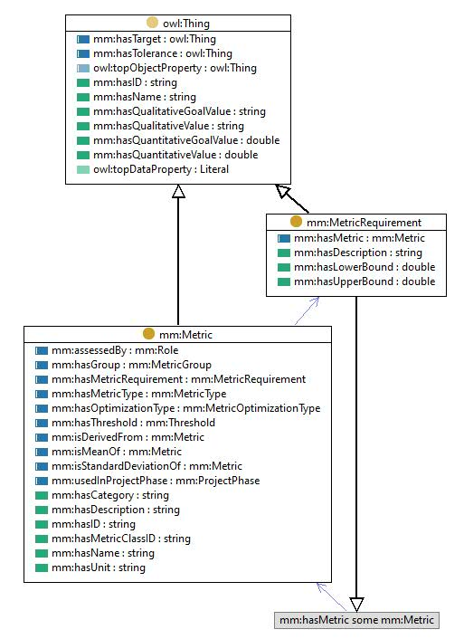

https://w3id.org/mm#MetricRequirement
Class 'Metric requirement'

type
Class [owl:Class]
label
Metric requirement
subClassOf
Anything that has at least one
metric
that is a
Metric
Anything that
Thing
References
as disjointWith (
Metric [mm:Metric]
)
as domain (
has lower bound
,
has upper bound
)
as range (
has metric requirement
)
as subClassOf (
Metric value
,
Target [mm:Target]
,
Threshold [mm:Threshold]
,
Metric [mm:Metric]
,
Tolerance [mm:Tolerance]
)
Generated with
TopBraid Composer
by
TopQuadrant, Inc.